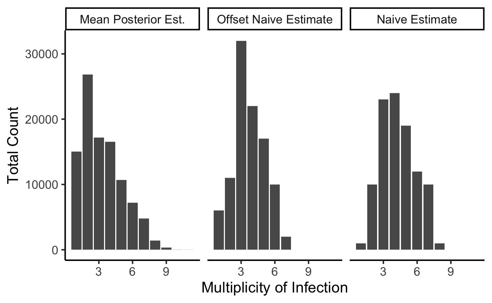

To demonstrate the usage of the package, we can simulate some genotyping data according to our model.
mean_moi <- 4 num_loci <- 10 num_biological_samples <- 100 epsilon_pos <- .03 epsilon_neg <- .15 # Generate the number of alleles at each locus allele_counts = rnbinom(num_loci, size = 15, mu = 10) + 2 # We'll use flat alpha vectors for our draws from the Dirichlet locus_freq_alphas = lapply(allele_counts, function(allele) { rep(1, allele) }) simulated_data <- moire::simulate_data(mean_moi, locus_freq_alphas, num_biological_samples, epsilon_pos, epsilon_neg)
Now that we have our data, let’s go ahead and run the MCMC
burnin = 1e3 num_samples = 1e3 res <- run_mcmc(simulated_data$data, burnin = burnin, samples = num_samples, eps_pos_0 = .05, eps_neg_0 = .1, eps_pos_var = .1, eps_neg_var = .1, max_coi = 20, importance_sampling_depth = 100, eps_pos_alpha = 1, eps_pos_beta = 1, eps_neg_alpha = 1, eps_neg_beta = 1)
After running the MCMC, we can access the draws from the posterior distribution and analyze.
# Estimate the COI for each sample est_cois = matrix(unlist(res$m_store), ncol = num_samples) est_coi_025 = apply(est_cois, 1, function(x) { quantile(x, .025) }) est_coi_50 = apply(est_cois, 1, function(x) { quantile(x, .5) }) est_coi_975 = apply(est_cois, 1, function(x) { quantile(x, .975) }) est_coi_mean = apply(est_cois, 1, mean) # Calculate naive COI for comparison naive_cois <- moire::calculate_naive_coi(simulated_data$data) offset_naive_cois <- moire::calculate_naive_coi_offset(simulated_data$data, 2) coi_data <- data.frame(est_coi_025, est_coi_50, est_coi_975, est_coi_mean, naive_coi = naive_cois, offset_naive_coi = offset_naive_cois) # Calculate allele frequencies from MCMC model est_allele_freqs = matrix(unlist(res$p_store), ncol = num_samples) est_allele_freq_025 = apply(est_allele_freqs, 1, function(x) { quantile(x, .025)}) est_allele_freq_50 = apply(est_allele_freqs, 1, function(x) { quantile(x, .5)}) est_allele_freq_975 = apply(est_allele_freqs, 1, function(x) { quantile(x, .975)}) est_allele_freq_mean = apply(est_allele_freqs, 1, mean) # Calculate Heterozygosity for each locus from model he_matrix <- matrix(unlist(lapply(res$p_store, function(run) { sapply(run, moire::calculate_he) })), ncol = num_samples) est_he_025 <- apply(he_matrix, 1, function(x) { quantile(x, .025)}) est_he_50 <- apply(he_matrix, 1, function(x) { quantile(x, .5)}) est_he_975 <- apply(he_matrix, 1, function(x) { quantile(x, .975)}) est_he_mean <- apply(he_matrix, 2, mean) est_he_mean_quantiles <- quantile(est_he_mean, c(.025, .5, .975))
Here we demonstrate the difference in distribution of the estimate of MOI using our approach vs the naive method of taking the maximum number of alleles observed or the second highest number of alleles observed
coi_estimates <- coi_data %>% select(est_coi_50, naive_coi, offset_naive_coi) %>% gather(key = "estimator", value = "estimate") %>% mutate(estimator_pretty = case_when( estimator == 'est_coi_50' ~ "Mean Posterior Est.", estimator == 'naive_coi' ~ "Naive Estimate", estimator == 'offset_naive_coi' ~ "Offset Naive Estimate" )) %>% transform(estimator_pretty = factor(estimator_pretty, levels = c("Mean Posterior Est.", "Offset Naive Estimate", "Naive Estimate"))) ggplot(coi_estimates, aes(x = estimate, stat(count))) + facet_wrap(~ estimator_pretty) + geom_bar() + xlab("Multiplicity of Infection") + ylab("Total Count") + theme_classic(base_size = 16)
